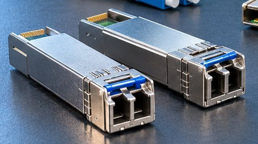

Ethernet, switching et Wi-Fi › Câbles, fibre et énergie
SFP
Small Form-factor Pluggable
Un SFP est un petit module qu’on glisse dans un port du switch pour choisir le type de liaison — fibre courte, fibre longue ou cuivre — sans changer de switch.
Commence par « Découvrir ». Passe à « Approfondir » quand l’essentiel est clair.
Le problème : un switch, des besoins différents
Un même modèle de switch peut être installé dans un bureau, au bout d’une fibre de 300 m ou à 20 km d’un autre site. Si le type de fibre était soudé dans le switch, il faudrait un modèle par situation. La solution : des ports modulaires, dans lesquels on insère le module adapté à chaque lien.
L’idée en une phrase
Le SFP est un adaptateur enfichable : le switch fournit une cage standard, le module choisi décide du type de liaison (fibre courte, fibre longue, cuivre).
Comment ça marche
- Le switch possède des cages SFP vides, souvent les derniers ports de la face avant.
- On y glisse un module adapté au lien, même switch allumé (on dit « à chaud »).
- Le module contient un émetteur laser et un récepteur : il transforme le signal électrique du switch en lumière, et inversement.
- On branche la fibre (connecteur LC double) sur le module.
- Le switch lit une petite mémoire du module pour connaître son type, puis active le port.


Les modules les plus courants à 1 Gb/s
| Module | Fibre | Distance | Repère |
|---|---|---|---|
| 1000BASE-SX | multimode | jusqu’à 550 m | courte portée |
| 1000BASE-LX/LH | monomode | 10 km | longue portée |
| 1000BASE-T | cuivre RJ45 | 100 m | pour brancher un câble cuivre dans une cage SFP |
Erreurs fréquentes
- Modules différents aux deux bouts : un SX en face d’un LX ne fonctionnera pas (longueurs d’onde et fibres différentes).
- Module « non supporté » : certains constructeurs n’acceptent que leurs modules ou des modules compatibles programmés pour eux. Le port reste désactivé avec un message d’erreur.
- Confondre SFP et SFP+ : un module SFP+ (10 Gb/s) n’est pas un SFP (1 Gb/s), même s’ils ont la même forme. Voir SFP+.
Les mots à connaître
- SFP — Small Form-factor Pluggable, module enfichable qui adapte un port de switch à un type de liaison, typiquement à 1 Gb/s.
- Cage — Logement vide d’un switch où l’on insère un module SFP.
- Branchement à chaud — Insertion ou retrait d’un module sans éteindre l’équipement.
- Longueur d’onde — « Couleur » de la lumière émise par le module, en nanomètres (850, 1310, 1550 nm).
Teste-toi
1. Un administrateur relie deux switches avec un module 1000BASE-SX d’un côté et un 1000BASE-LX de l’autre. Le lien reste éteint. Pourquoi ?
Voir le corrigé
Les deux modules ne sont pas compatibles : le SX émet à 850 nm pour de la fibre multimode, le LX à 1310 nm pour de la monomode. Il faut deux modules du même type et une fibre adaptée.
2. Quel est l’intérêt d’un module SFP 1000BASE-T ?
Voir le corrigé
Il permet de brancher un câble cuivre RJ45 dans une cage SFP, par exemple lorsqu’il ne reste plus de port cuivre libre, ou pour relier un équipement qui n’a pas de fibre. La distance reste limitée à 100 m.
Ce que contient un module
- un émetteur : laser VCSEL à 850 nm (multimode, peu coûteux) ou laser DFB/FP à 1310 et 1550 nm (monomode) ;
- un récepteur : photodiode PIN, ou APD pour les très longues portées ;
- une EEPROM (norme SFF-8472) qui décrit le module : type, constructeur, numéro de série, longueur d’onde, distance ;
- la surveillance numérique (DOM/DDM) : température, tension, courant du laser, puissance émise et reçue.
Le format, la connectique électrique et les dimensions sont fixés par un accord entre industriels (MSA, Multi-Source Agreement) : c’est ce qui rend les modules interchangeables entre fabricants… quand le constructeur du switch ne les bloque pas.
Modules monofibres (BiDi) et multiplexage
Un module BiDi émet et reçoit sur une seule fibre, avec deux longueurs d’onde différentes (par exemple 1310 nm dans un sens et 1550 nm dans l’autre). Il faut alors une paire assortie : un module « 1310/1550 » d’un côté et « 1550/1310 » de l’autre. On économise ainsi une fibre, ce qui compte lorsque les fibres entre bâtiments sont rares ou louées.
Les modules CWDM et DWDM émettent sur des longueurs d’onde précises : avec un multiplexeur passif, on fait passer plusieurs liens sur la même paire de fibres.
Vérifier un module (Cisco IOS)
SW1# show inventory
NAME: "GigabitEthernet1/1/1", DESCR: "1000BaseLX SFP"
PID: GLC-LH-SMD , VID: V01 , SN: FNS12345ABC
SW1# show interfaces GigabitEthernet1/1/1 transceiver
Optical Optical
Temperature Voltage Tx Power Rx Power
Port (Celsius) (Volts) (dBm) (dBm)
--------- ----------- ------- -------- --------
Gi1/1/1 29.4 3.29 -5.8 -9.1
- Puissance émise de -5,8 dBm : normale pour un module LX.
- Puissance reçue de -9,1 dBm : confortable (la sensibilité d’un LX est d’environ -20 dBm).
Si le module est refusé, le journal affiche un message de type %PHY-4-UNSUPPORTED_TRANSCEIVER et le port passe en err-disabled. La commande service unsupported-transceiver existe sur certaines plateformes, mais elle n’est pas documentée par le constructeur et peut affecter le support : à décider en connaissance de cause.
Piège à éviter
Un module longue portée (ZX, 70 km) branché sur une fibre courte peut saturer le récepteur d’en face, voire l’endommager : trop de lumière est aussi un problème. On insère alors un atténuateur optique.
Exercices
1. Un lien LX de 1,5 km affiche une puissance reçue de -2 dBm et des erreurs. Le module d’en face est un ZX. Que se passe-t-il ?
Voir le corrigé
Le module ZX émet fort, pour 70 km. Sur 1,5 km, la puissance reçue (-2 dBm) dépasse la plage du récepteur LX : il est saturé, d’où les erreurs. Il faut des modules du même type (LX des deux côtés) ou un atténuateur adapté.
2. Il ne reste qu’une fibre disponible entre deux bâtiments. Comment établir un lien à 1 Gb/s ?
Voir le corrigé
Avec une paire de modules BiDi assortis (par exemple 1310 nm TX / 1550 nm RX d’un côté, l’inverse de l’autre). Chaque sens utilise sa propre longueur d’onde sur la même fibre.